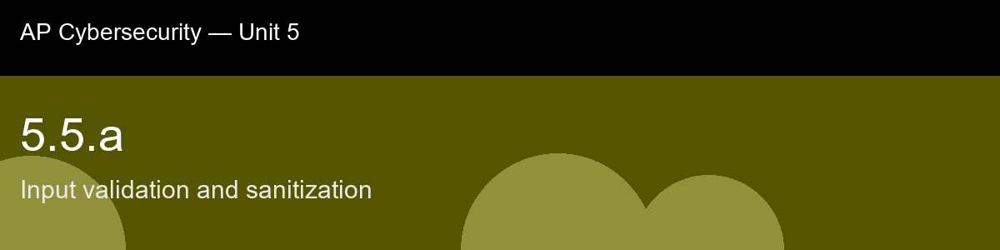

5.5.a recap, Input validation and sanitization
Nice work today. Here's what to lock in:
- Recap handout:
post-lecture-handout.docx
- Simulation: SimLab
- Self-check quiz: due before next class
The big picture: The idea worth keeping longest is that this skill is the unifying prevention layer for practically everything in 5.1: SQL injection, XSS, and command injection are three different symptoms of the exact same root failure, an application trusted that input was just data when a downstream interpreter (a SQL engine, a browser, a shell) was ready to treat some of those characters as instructions. Allowlisting flips the entire defensive posture from "try to anticipate every attack" to "define what correct looks like and reject everything else," which is a fundamentally smaller and more stable problem to solve than enumerating attacker creativity. Keep canonicalization close too, validating before decoding is a classic bypass, because a filter checking the raw string never sees what the string actually becomes after the browser or server normalizes it, which is precisely how encoded path-traversal and injection payloads slip past naive filters.
Key terms to lock in:
- Allowlist (whitelist) validation, accepting only input that matches a known-good pattern, rejecting everything else by default.
- Denylist (blocklist) validation, rejecting input that matches known-bad patterns; weaker because it must anticipate every attack variant.
- Canonicalization, reducing input to one normalized form before validating it, so encoded or obfuscated variants cannot slip past a filter that only checks the raw string.
- Sanitization, actively stripping or rewriting dangerous content out of accepted input, rather than just accepting or rejecting it wholesale.
- Output encoding, transforming data at the point it is inserted into a new context (HTML, SQL, shell) so special characters are treated as literal data, not executable syntax.
Common misconceptions -- don't fall for these:
- "Client-side (JavaScript) validation is good enough security." → It improves user experience but provides zero security guarantee, since an attacker fully controls the client and can bypass it entirely; all security-relevant validation must be re-checked on the server.
- "Sanitizing input once when it's received protects it everywhere it's later used." → The correct encoding depends on the output context (HTML vs. SQL vs. shell vs. JSON); a single upstream pass is not a substitute for context-specific output encoding at each use.
- "A denylist that blocks the obvious bad keywords is enough." → Attackers routinely bypass denylists through case changes, encoding, and alternate syntax; allowlisting known-good shapes is far more robust than trying to enumerate every bad one.
Learning objective(s): 5.5.A

## 5.5.a recap, Input validation and sanitization
Nice work today. Here's what to lock in:
- Recap handout: `post-lecture-handout.docx`
- Simulation: SimLab
- Self-check quiz: due before next class
**The big picture:** The idea worth keeping longest is that this skill is the unifying prevention layer for practically everything in 5.1: SQL injection, XSS, and command injection are three different *symptoms* of the exact same root failure, an application trusted that input was just data when a downstream interpreter (a SQL engine, a browser, a shell) was ready to treat some of those characters as instructions. Allowlisting flips the entire defensive posture from "try to anticipate every attack" to "define what correct looks like and reject everything else," which is a fundamentally smaller and more stable problem to solve than enumerating attacker creativity. Keep canonicalization close too, validating before decoding is a classic bypass, because a filter checking the raw string never sees what the string actually becomes after the browser or server normalizes it, which is precisely how encoded path-traversal and injection payloads slip past naive filters.
**Key terms to lock in:**
- **Allowlist (whitelist) validation**, accepting only input that matches a known-good pattern, rejecting everything else by default.
- **Denylist (blocklist) validation**, rejecting input that matches known-bad patterns; weaker because it must anticipate every attack variant.
- **Canonicalization**, reducing input to one normalized form before validating it, so encoded or obfuscated variants cannot slip past a filter that only checks the raw string.
- **Sanitization**, actively stripping or rewriting dangerous content out of accepted input, rather than just accepting or rejecting it wholesale.
- **Output encoding**, transforming data at the point it is inserted into a new context (HTML, SQL, shell) so special characters are treated as literal data, not executable syntax.
**Common misconceptions -- don't fall for these:**
- "Client-side (JavaScript) validation is good enough security." → It improves user experience but provides zero security guarantee, since an attacker fully controls the client and can bypass it entirely; all security-relevant validation must be re-checked on the server.
- "Sanitizing input once when it's received protects it everywhere it's later used." → The correct encoding depends on the output context (HTML vs. SQL vs. shell vs. JSON); a single upstream pass is not a substitute for context-specific output encoding at each use.
- "A denylist that blocks the obvious bad keywords is enough." → Attackers routinely bypass denylists through case changes, encoding, and alternate syntax; allowlisting known-good shapes is far more robust than trying to enumerate every bad one.
**Learning objective(s):** 5.5.A